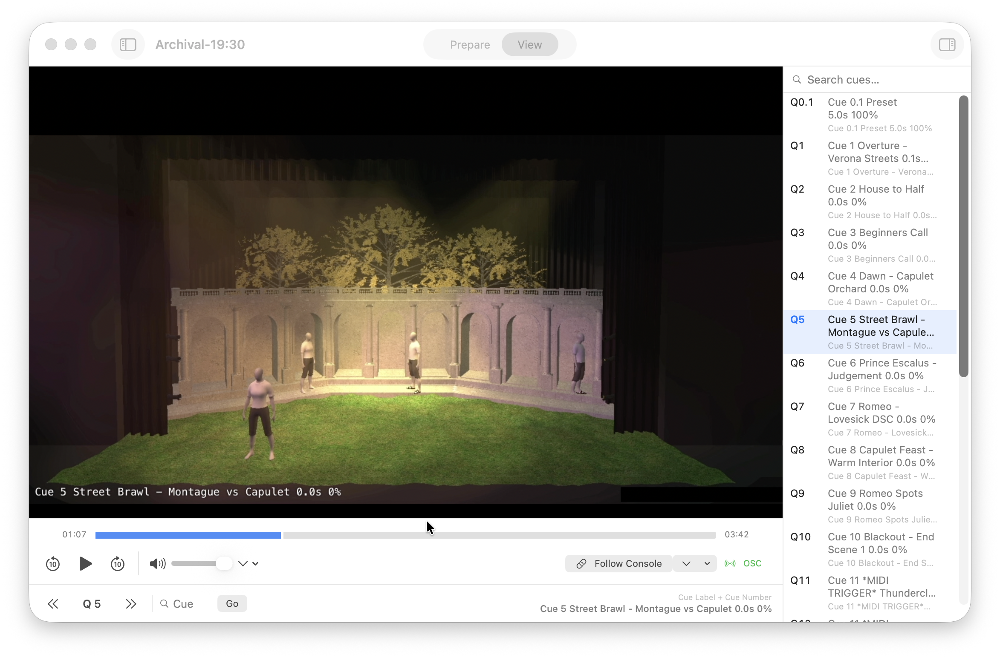

Hopper
Hopper
The better playback tool
Hopper is a powerful tool for managing show archivals. Import any archival video and Hopper will read the cue numbers and labels straight out of the video. You can then navigate your video by cue or link Hopper to your lighting console to have Hopper automatically follow along with what's on stage.
Your archival recordings, always where you need them to be.

Drop your screenshot atassets/hopper-preview.png
Features
Learn about Hopper's features and how they make rehearsals, plotting and show-runs a breeze!
Video import
Open standard video files from rehearsal or performance captures. Draw a rectangle over the burnt-in cue
display once; Hopper scans the video with on-device OCR (Apple Vision) and records every cue number and list
transition with a precise timestamp. Analysis results are saved in a small .hopper sidecar next
to the file so you rarely need to re-scan.
 Add screenshot at
Add screenshot at assets/feature-video-import.png
Show management
String multiple videos into one session for full-show archivals: Hopper aligns timelines across acts so cue navigation stays coherent. Give the performance a display name and act labels where it helps the room. Sidecar files keep cue regions, track choices, and metadata portable—useful when video lives on shared storage.
 Add screenshot at
Add screenshot at assets/feature-show-management.png
Cue playback
Use the cue list to jump to any indexed moment, including multiple takes of the same cue in one recording. To mirror the board, enable console follow: Hopper listens for standard ETC EOS outgoing OSC cue events (UDP or TCP). When cue 40 fires on the console, the video seeks to the matching instant from your archival—frame-accurate, not keyframe-guessed.
 Add screenshot at
Add screenshot at assets/feature-cue-playback.png
Audio control
documentation for multi-channel archivals inclduing PGM, Comms and Timecode. Hopper lets you label, toggle and hide channels and with the auto-level feature you can clearly hear all channels at once.
How it works
From import to session in four steps.
-
Import your recording
Open any video file of your show. Hopper documentations multi-act productions—load an entire run as a sequence and it jumps between videos automatically.
-
Draw a detection region
Drag a box over the burnt-in cue number on screen. Hopper uses on-device OCR to read the cue display frame by frame and builds a precise map of every cue to its exact timestamp in the video.
-
Connect your console
Point your console’s OSC output at Hopper. UDP and TCP are both documentationed. No cue-level programming is required on the console—Hopper listens for standard outgoing cue fire events.
-
Run the session
Press play and work the show as usual. Each time a cue fires on EOS, Hopper seeks the video to the matching moment from your recording so designers and stage management stay aligned with the operator.
Pricing
$250 AUD / year
Unlock a year of interruption-free playback.
- Hopper works without a license with no software limitations; every five minutes in the playback window it pauses and reminds you it is unlicensed.
- With a valid license, those reminders stop for one year from the date of purchase.
- A license can be used on up to three computers. If you hit your limit, contact documentation and we will reset your three activation slots (and deactivate those computers).
- An internet connection is required for license activation.
Download
Hopper is free to download, a license is required to unlock uninterrupted playback
Download latest versionRequires macOS 13 or later.